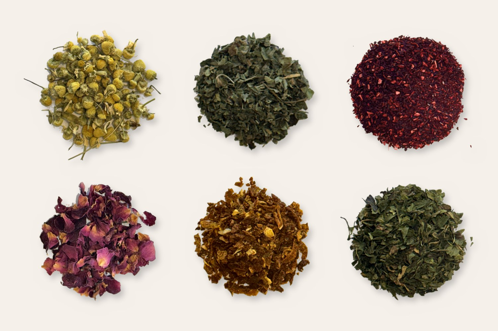
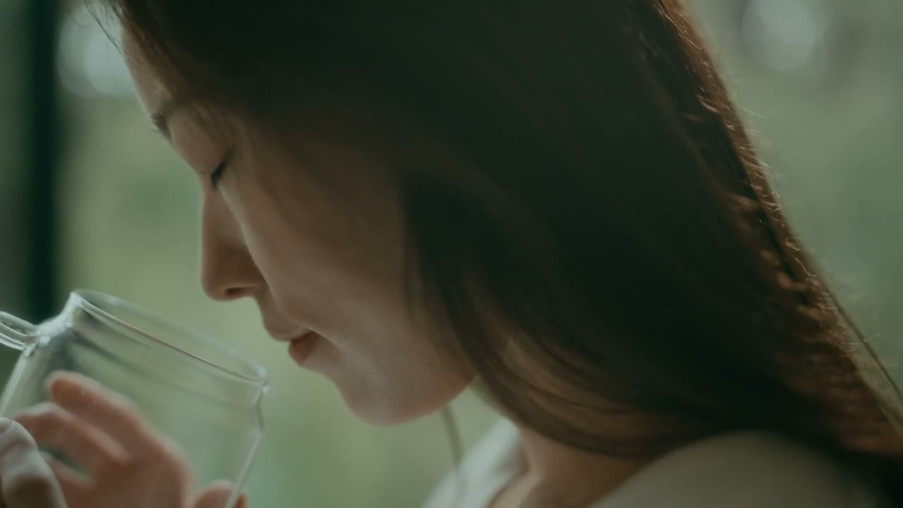

삶은,
끝나지 않는 블렌딩

레몬밤 · 캐모마일 · 히비스커스 · 장미 · 유자 · 페퍼민트찻잎 하나를 코에 가까이
대본 적이 있습니까.
혼자서도 이미 향이 있습니다. 그런데 다른 잎과 섞이는 순간, 그 향은 더 깊어지고 다채로워집니다.
Have you ever held a single tea leaf close to your nose? It already has a scent of its own. But the moment it meets another leaf, that scent grows deeper and richer.

우리의 삶도 그렇습니다.
살아온 순간들, 살아가는 시간, 그리고 만나게 될 수많은 경험들은 끝없이 더해지고, 어우러지며 완성되어 갑니다.
좋은 재료는 혼자서도 충분하지만, 서로 만나면 서로를 더 좋게 만듭니다. 사람도 그렇습니다. 「취향의 권리」는 이 블렌딩으로서의 삶을 차 한 잔에 담습니다.
 대한명인 차블렌딩명인 이소연
대한명인 차블렌딩명인 이소연사실은 한 분 한 분을 직접 만나
차를 나누어 마시고 싶었습니다.
하지만 그것은 현실적으로 쉽지 않은 일입니다. 그래서 이 티 블렌딩 키트가 그 역할을 대신해 주기를 바랐습니다.
허브를 관찰하고 블렌딩하는 경험을 통해 자신의 취향과 감각을 발견하고, 나를 조금 더 이해하는 시간을 선물하고 싶어 만들었습니다.

이 키트에는 정답이 없습니다.
어떤 허브가 가장 좋은지 알려드리지 않습니다. 오직 오늘의 나에게 무엇이 편안한지 발견해 가는 과정이 있을 뿐입니다.
전문가에게는 원칙이 있지만, 당신에게는 취향의 권리가 있습니다. 추천 비율은 취향을 발견하기 위한 첫 번째 기준일 뿐, 반 스푼의 차이가 곧 당신의 레시피가 됩니다.
There is no right answer in this cup. Only the process of discovering what feels right for you today.
발견의 경험
정답을 알려주지 않습니다. 오늘의 나에게 무엇이 편안하고 어디에 마음이 머무는지 스스로 발견합니다.
감각으로 돌봄
향을 맡고 맛을 음미하는 시간이, 곧 나를 이해하고 돌보는 시간이 됩니다.
나의 선택
유행이나 타인의 시선이 아니라 내 감각이 이끄는 취향을 존중합니다. 그것이 ‘취향의 권리’입니다.

첫 모금 전에, 아주 잠깐만 멈추어 보자.
천천히 숨을 들이마시고 길게 내쉰다.
좋은 향인지 판단하기 전에, 그저 어떤 향인지 느껴본다.
낯설어도 괜찮다. 마음에 들지 않아도 괜찮다.
Before judging if it smells good, simply notice what it smells like. 블렌딩 노트 — 비율과 그날의 감상을 적는 페이지
블렌딩 노트 — 비율과 그날의 감상을 적는 페이지향은 지나가지만,
기록은 취향을 남깁니다.
선택한 원료와 비율, 첫 향과 마지막 여운을 기록하면 한 번의 경험이 나만의 레시피가 됩니다.
차를 기록하는 것이 아니라, 나의 취향을 기록합니다.
찻잎과 허브의 결을 읽어 여러 기업의 한 잔을 설계하고, 그 감각을 가르쳐 온 블렌더. 저서 『11시와 4시, 나는 차를 마신다』, 『Life in My Teacup』.

16년째 로스팅을 이어 오며, 많은 커피 전문가를 길러 낸 로스터. VER.2 Depth의 로스터 레시피를 설계했습니다.
오늘의 질문
- 오늘 당신의 마음은 어디에 가장 오래 머물렀나요
- 어떤 향이 가장 오래 기억에 남았나요
- 오늘 당신은 어떤 차를 마시고 싶은가
- 누구와 함께 마시고 싶은가